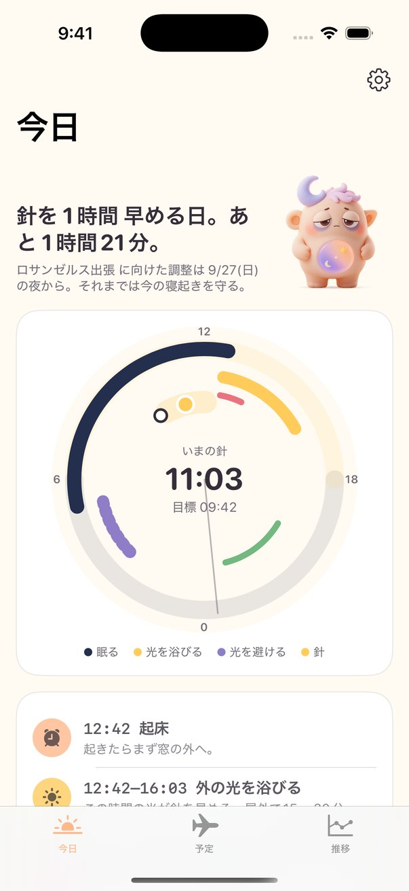
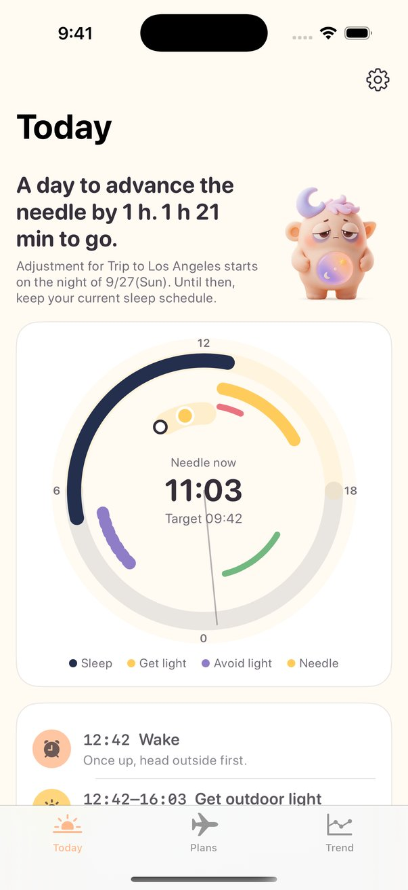
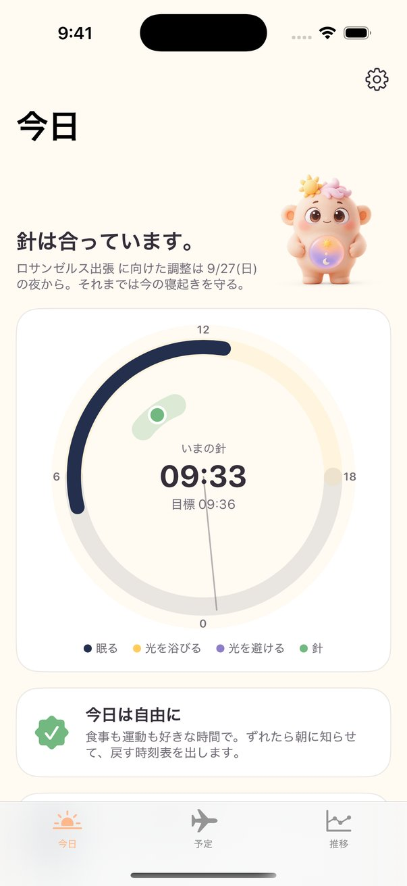
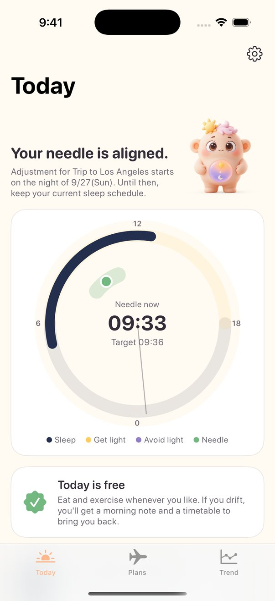
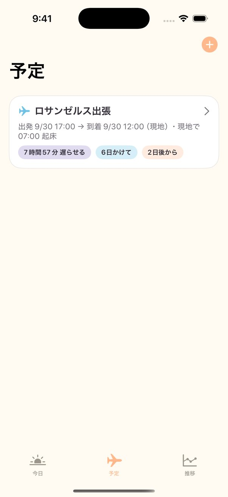
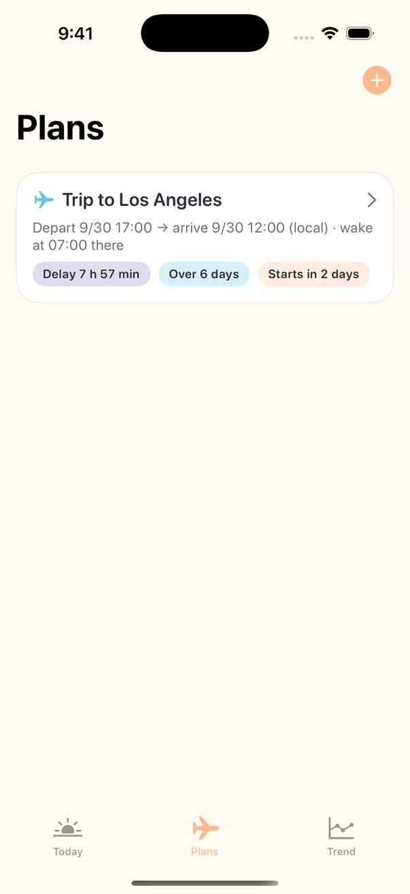
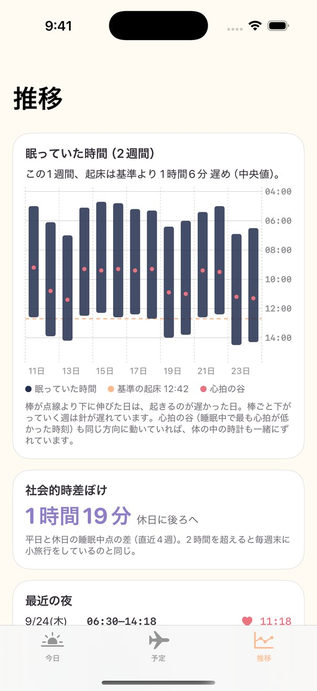
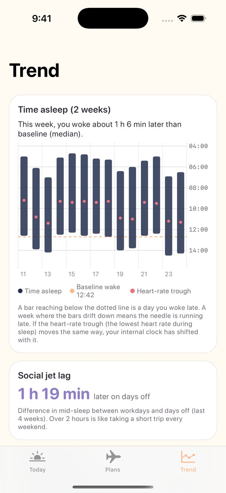

90秒でわかる SundialSundial in 90 seconds
再生すると YouTube の動画を読み込みますPlaying loads the video from YouTube
時差ぼけは着いてから治すものではなく、出発前から設計するもの。Sundial は体内時計の「針」を Apple Watch から毎朝推定し、いつ光を避け、いつ浴び、いつ食べるかを、その日の時刻表にします。Jet lag isn't something you fix after landing. It's something you design before departure. Sundial estimates your body clock's "needle" from Apple Watch every morning and turns it into a daily timetable: when to avoid light, when to seek it, when to eat.
3つ入れるだけ。アプリと同じ計算です（体内時計の位置は「普段の起床の3時間前」で仮置き）。Three inputs. Same math as the app (your body clock is placed 3 hours before your usual wake time).
実際の針は人によって2時間ほどずれます。アプリは Apple Watch の睡眠と睡眠中の心拍から毎朝測り直し、時刻表を引き直します。The real needle varies by about 2 hours between people. The app re-measures it every morning from Apple Watch sleep and heart rate, and redraws the timetable.
App Store で入手Get it on the App Store 無料Free再生すると YouTube の動画を読み込みますPlaying loads the video from YouTube
体内時計には「針」があります。深部体温がいちばん低くなる時刻で、普段は起床の3時間ほど前。その前に浴びる光は針を遅らせ、後に浴びる光は針を早めます。Your body clock has a needle: the time your core temperature is lowest, usually about 3 hours before you wake. Light before it delays your clock; light after it advances it.
東京からロサンゼルスへ飛ぶと、到着初日の針は現地の正午にあります。朝の散歩で浴びた光は「針の前」なので、時計を進めるどころか逆に遅らせ、順応を何日も長引かせます。正しいのは、午前は光を避け、正午を過ぎてから浴びること。Fly Tokyo to Los Angeles and on day one your needle sits at local noon. A morning walk puts light before the needle, so it delays your clock instead of advancing it, and adds days to your recovery. The right move: avoid light in the morning, seek it after noon.
Sundial はこの針を毎朝 Apple Watch から推定し、光・食事・運動・入浴・就寝の5行の時刻表を出します。針が合った日は、何も言いません。Sundial estimates the needle every morning from Apple Watch and gives you a five-line timetable: light, meals, exercise, bath, bedtime. On days the needle is aligned, it says nothing.


針の位置は人によって2時間ほど違い、日によっても動きます。Sundial は Apple Watch の睡眠と睡眠中の最低心拍の時刻から、あなた自身の針を毎朝推定し、その日の時刻表を引き直します。The needle differs by about 2 hours between people and moves day to day. Sundial estimates yours every morning from Apple Watch sleep and the timing of your lowest heart rate during sleep, and redraws the day's timetable.
今日の計画は動かしません。明日の計画は前日18時に確定します。深夜に開いても、まだ前日の続きとして就寝の目安が見えます。出張者の生活に合わせた決めごとです。Today's plan never changes. Tomorrow's is fixed at 6 pm the day before. Open it at 1 am and you still see last night's bedtime. Rules made for people who travel.
その朝の光を浴びるべきか、避けるべきかは、針がどこにあるかで決まります。Sundial は到着日の時刻表を現地時刻で出し、光を避ける時間にはサングラスを、浴びる時間には外へ出ることを勧めます。機内食は抜いて、現地の朝食を「最初の一口」に。Whether to seek or avoid that morning light depends on where your needle is. Sundial gives you arrival day in local time: sunglasses during the avoid window, outdoors during the seek window. Skip in-flight meals and make the local breakfast your "first bite".
東京 → ロサンゼルスの例。すべてアプリが日付と針から出す時刻で、あなたは行を消していくだけです。Tokyo → Los Angeles as an example. Every time comes from the date and your needle; you just tick the rows off.
平日6時起床、週末は10時。この4時間の差は、毎週末4時間の時差のある土地へ飛んで月曜に帰ってくるのと同じです。Sundial は普段の起床を基準に、ずれた朝だけ戻す時刻表を出します。朝7時に起きる人を前提にしないので、夜型の人も遅番の人も、そのままの生活が基準です。Up at 6 on weekdays, 10 on weekends: that four-hour gap is the same as flying four time zones every weekend and coming back on Monday. Sundial uses your own wake time as the baseline and only gives you a timetable on mornings you've drifted. It doesn't assume you wake at 7; night owls and late shifts keep their own life as the baseline.






メジャーリーグ4万6千試合の解析では、2時間以上の時差が残る試合で成績が明確に落ちていました（Song 2017）。鍛え抜かれた選手でそうなら、到着翌日の商談で判断力だけが普段どおりと考えるほうが不自然です。Sundial の法人版は、その損失をどれだけ減らせたかを数字で示します。An analysis of 46,000 MLB games found performance clearly dropped with 2+ hours of residual jet lag (Song 2017). If elite athletes suffer, expecting normal judgment in a meeting the day after landing is the odd assumption. Sundial for companies shows, in numbers, how much of that loss you recovered.
推奨です。針の推定には Watch の睡眠と睡眠中の心拍を使います。無くても、普段の起床時刻を入れれば時刻表は出ます。Recommended. The needle is estimated from Watch sleep and heart rate during sleep. Without one, enter your usual wake time and the timetable still works.
約束はできません。出発前3日の調整で体内時計を1〜2時間ほど動かせたという小規模な報告（Burgess 2003）が根拠で、残りは現地で1日1時間ずつです。Sundial は医療機器ではありません。No promises. The evidence is a small study where three days of pre-departure adjustment shifted the clock 1–2 hours (Burgess 2003); the rest continues at about an hour a day after arrival. Sundial is not a medical device.
設定でオンにした人にだけ、針を動かす少量と寝つき用の時刻を出します。日本では医薬品扱いで市販されていないため、既定はオフです。Only if you turn it on: it then shows timing for a small clock-shifting dose and a sleep dose. Off by default, as it's a prescription medicine in Japan.
針＝深部体温の谷は起床の3〜4.5時間前（Eastman & Burgess 2009）。光の位相反応（Khalsa 2003）、運動の位相反応（Youngstedt 2019）、食事と末梢時計（Wehrens 2017）、出発前の調整（Burgess 2003）、時差と成績（Song 2017）。Needle = core temperature trough, 3–4.5 h before waking (Eastman & Burgess 2009). Light phase response (Khalsa 2003), exercise phase response (Youngstedt 2019), meals and peripheral clocks (Wehrens 2017), pre-flight adjustment (Burgess 2003), jet lag and performance (Song 2017).
出発の3日前に開けば間に合います。Open it three days before you leave and you're on time.
App Store で入手Get it on the App Store 無料Free